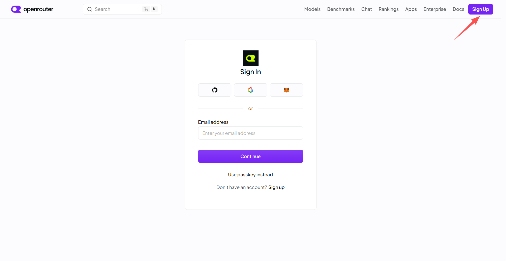
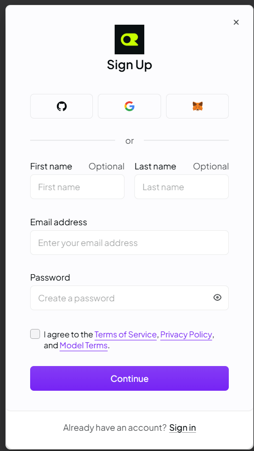
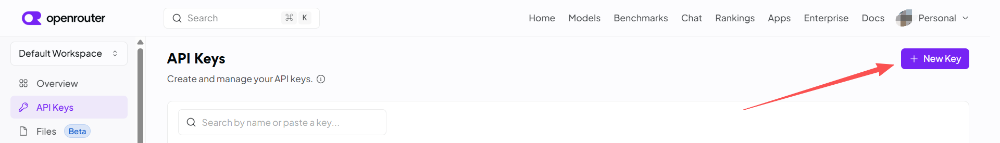
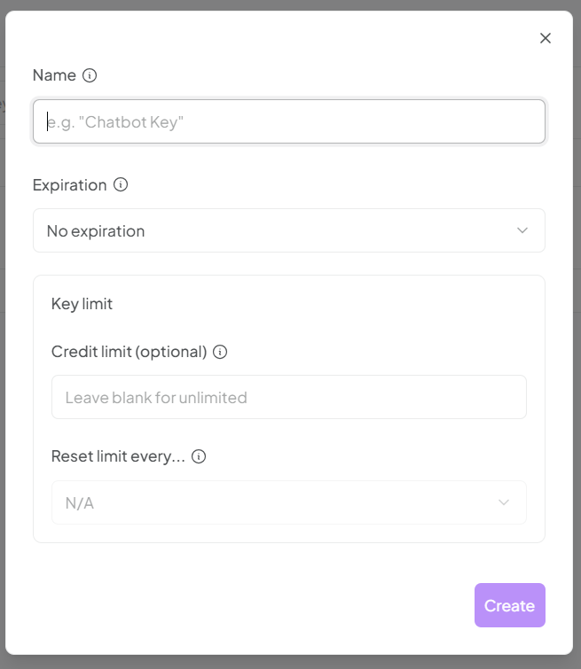
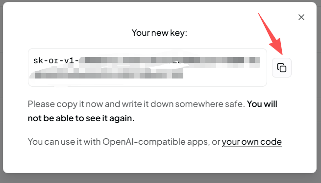

⚠️ OpenRouter 是国际网站，国内访问可能较慢或偶尔打不开。如果页面加载缓慢，请耐心等待，或尝试更换网络环境。推荐优先配置智谱和百度千帆（国内访问更稳定），OpenRouter 作为补充。
1打开 OpenRouter

2注册账号
推荐用 GitHub 或 Google 账号一键注册（最快），也可以用邮箱注册。填写邮箱和密码，勾选同意条款后点击 Continue。

3进入 API Keys 页面
登录后，点击右上角头像，在下拉菜单中找到「API Keys」并点击进入。

4创建新的 API Key
点击右上角紫色「+ New Key」按钮。名称随意填写（如"零号工具"），过期时间选「No expiration」（永不过期），额度限制留空（不限制），点击「Create」。

5复制 API Key
生成的 Key 以 sk-or-v1- 开头。点击复制按钮（📋）。注意：这个 Key 只显示一次，关闭后无法再次查看，请立即复制并妥善保管。

💡 OpenRouter 免费模型池会自动从当前可用的免费模型中挑选一款执行，某款下架会自动绕开。零余额每天约 50 次请求（社区实测值），高峰期可能排队。免费通道的对话内容可能被模型厂商留存用于训练，请勿输入商业机密或个人隐私。